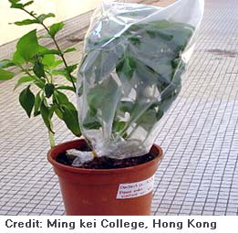

| [ HOME | About Evapotranspiration | Juan's Experiment | 5th Grade Citizen Scientist! ] |
| In the water cycle, water moves from the earth's surface up into the atmosphere. Water returns to the surface through precipitation.
One way that water moves up into the atmosphere is from the soil. Liquid water in the soil turns into water vapor (gas form) and escapes into the air. This process is called evaporation. If you pour a cup of water into a pot of dirt and leave the pot for a day or two, the dirt will be dry. The water has evaporated. Evaporation is faster when it is hot or when it is windy. |
|  Another way water moves into the atmosphere is through plants. Plants take up water from the soil into their roots. The water is then released through their leaves. This process is called transpiration. If you put a plastic bag over a plant and come back in an hour or two, you will see moisture on the inside of the bag. This moisture shows that the plant is releasing water through its leaves. |
| Evaporation and transpiration are both part of the water cycle. Together, they are called evapo-transpiration. It is important to find out how plants affect evapo-transpriation, especially in desert areas where we want to conserve water. More plants might mean less evaporation, because plants can keep the soil cool. Plants can also block the wind. Or more plants might mean more transpiration, because plants take water out of the soil. |
| We don't know the answer yet. What do you think? |